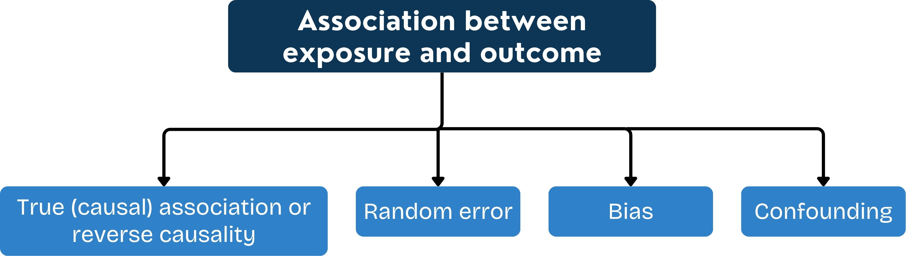

3 Measures of Effect/Association
As mentioned in Fundamental Epidemiology section, comparison is fundamental in epidemiological studies. When interpreting the results from both observational and analytical studies, we typically use some sort of comparison.
In analytical studies, we often aim investigate risk factors of an outcome. If we suspect that a particular factor may be causing a specific outcome, we first look for an association between the factor and the outcome. To do this, we compare the occurrence of the outcome in a group of people that has been ‘exposed’ to the factor, with the occurrence in a group of people that has not been ‘exposed’. We use ratio measures or difference measures.
3.1 Ratio measures
Ratio: The value obtained by dividing one quantity by another (Porta 2014). We can use the ratio to compare any type of measure occurrence: Prevalence, Incidence or Odds between 2 populations.
Prevalence ratio
The prevalence ratio is sometimes used in health-service planning to compare the burden of a condition in different groups. Prevalence is less useful than incidence in trying to establish the effect of an exposure, because prevalence depends on both incidence and duration
\[\text{Prevalence ratio} = \frac{\text{prevalence in population or group A}}{\text{prevalence in population or group B}}\]
Risk ratio
\[\text{RR} = \frac{\text{incidence risk in exposed population}}{\text{incidence risk in unexposed population}}\]
Rate ratio
\[\text{RR} = \frac{\text{incidence rate in exposed population}}{\text{incidence rate in unexposed population}}\]
Odds ratio
\[\text{OR} = \frac{\text{odds of outcome in exposed individuals}}{\text{odds of outcome in unexposed individuals}}\]
Odds ratio in Case-Control Study
\[\text{OR} = \frac{\text{odds of exposure in cases (people with the outcome)}}{\text{odds of exposure in controls (people without the outcome)}}\]
For rare outcomes in static populations (case-control studies), Odds ratio is almost similar to Risk ratio and rate ratio. Some people just call them all Relative risk.
3.2 Interpretation of Ratio Measures (Association)
To estimate an association, we need to answer 2 questions:
Is there an association?
Relative Risk = 1 : No association
Relative Risk > 1 : The risk/rate/odds of the outcome in the exposed group is greater than that in the unexposed group
Relative Risk < 1 : The risk/rate/odds of the outcome in the exposed group is less than that in the unexposed group. The exposure is a protective factor for the outcome.
Example
AND
How does this association mean?
To conclude the association between exposure and outcome, we need to consider other aspects: random error, bias, confounding. These aspects will be discussed more in the next sections.

3.3 Difference measures
\[\text{Absolute difference} = \text{occurrence (exposed) − occurrence (unexposed)}\]
\[\text{Risk/Rate difference} = \text{Risk/Rate (exposed) − Risk/Rate (unexposed)}\]
Interpretation
The difference measures are useful when we already have information that suggests that there is a causal relationship between the exposure and the outcome. The difference measures sometimes is called attributable risk or rate.
If the difference is positive, this estimates the excess occurrence of the outcome in the exposed group. When the causality is true, this equivalent to the number of cases in the exposed group that are caused by the exposure.
If the difference is negative, this estimates the reduction occurrence of the outcome in the exposed group. When the causality is true, this equivalent to the number of cases in the exposed group that have been prevented by the exposure.
The difference measure does not give any information about the impact of the exposure on the number of cases in the population as a whole. This depends on the prevalence of the exposure in the population.
There are more concepts about attributable but I do not present in this material: Attributable fraction in the exposed group, preventable fraction, population attributable risk, population attributable fraction.
3.4 Comparison between Ratio and Difference measures
Ratio measures and difference measures are influenced by different factors and provide different types of information.
Ratio measures estimate the strength of association between an exposure and an outcome. We use a ratio measure in analytical studies as one piece of evidence in judging whether an exposure causes an outcome.
Difference measures quantify the difference in incidence between an exposed and an unexposed population. We use difference measures when a causal association between an exposure and an outcome has already been established, to estimate the risk that is attributable to exposure in the exposed group.
The measures covered in this session are appropriate where the exposure measure is a categorical variable. They cannot, therefore, be used to analyse continuous exposure variables
Terminology
There are three commonly used measures of disease frequency in epidemiology: we have called these the odds, the risk, and the rate. The numerator in all of three of these is the number of cases occurring within a defined period of time. The difference is in the denominator: the odds uses the number of non-cases within the same time period, the risk uses the number of individuals at the beginning of the follow-up period, and the rate uses the person-time at risk during the follow-up period. The ratio of odds, risks or rates between two groups gives the respective measures of effect: the odds ratio, the risk ratio and the rate ratio.
In the literature, however, it is common to see these terms used interchangeably, which can cause confusion. In particular, the term risk is often used generically to refer to any of the above measures of disease frequency. To complicate things further, some of these measures have other names: the risk is also sometimes referred to as the cumulative risk, while the rate is sometimes known as the incidence density. In infectious disease epidemiology, the force of infection is used to describe the rate at which susceptible individuals become infected.
Make it clear what you are measuring in your study